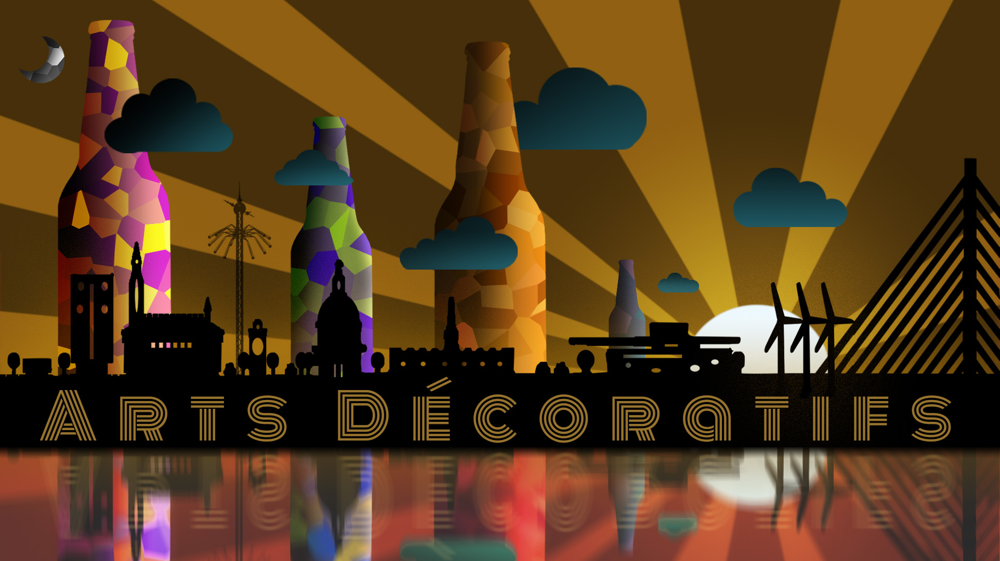

Responsive Web Design using Media Queries
Making a better experince when switching between different devices
fx. @media only screen and (max-width: 600px)
MAKING A SPLASH IMAGE RESPONSIVE
 1920 x 1080 px (desktop 16:9 format)
627 x 375 px (mobil landscape)
375 x 627 px (mobil potrait)
1024 x 768 px (tablet landscape)
768 x 1024 px (tablet portrait)
MAKING A favicon


Layout Diagrams'
creating and using layout diagrams, we can predict and prepare how we are going to contain our infomations in our code
Using flex-box we kan make the website more responsive across different devices
try to hover over the layout diagram below and se how it changes
Flex it like a madman
HEADLINE
a div in a div
column_wide
top
txt
imagine
bottom
txt
imagine
Column_narrow
REsults